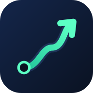

KeptKept for Android
Counts your miles with the screen off, starts rides by itself, and puts today's take-home on your home screen.
⬇ Download Kept (APK)About 4 MB · Android 5.1 or newer · not in Google Play yet
- Open the downloaded fileTap the download notice, or open Files → Downloads → kept.apk.
- Allow this source onceAndroid asks for permission: tap Settings → turn on “Allow from this source” → go back.
- Tap InstallIf Play Protect warns about an unknown developer: More details → Install anyway.
- Sign inUse email and password. Used the PIN version before? Choose “Bring over data from the PIN version” once.
- Allow location “all the time”Settings → Apps → Kept → Permissions → Location → Allow all the time. Then Apps → Kept → Battery → Unrestricted.
- Automatic ridesIn Kept: Settings → Your apps → Allow notification access → turn on “Kept ride detection”.
Installing a newer Kept says “App not installed”? Open Kept once so today's trips save, uninstall it, then install the new file. Your data is safe in your account.
Full install guide (PDF) →
Android için Kept
Ekran kapalıyken millerinizi sayar, siparişleri kendiliğinden başlatır ve bugünkü net kazancınızı ana ekranınıza koyar.
⬇ Kept'i indir (APK)Yaklaşık 4 MB · Android 5.1 ve üzeri · henüz Google Play'de yok
- İnen dosyayı açınİndirme bildirimine dokunun ya da Dosyalar → İndirilenler → kept.apk'yı açın.
- Bu kaynağa bir kez izin verinAndroid izin ister: Ayarlar'a dokunun → “Bu kaynaktan izin ver”i açın → geri dönün.
- Yükle'ye dokununPlay Protect bilinmeyen geliştirici uyarısı verirse: Diğer ayrıntılar → Yine de yükle.
- Giriş yapınE-posta ve şifre kullanın. Daha önce PIN sürümünü kullandıysanız bir kez “PIN sürümündeki verileri aktar”ı seçin.
- Konuma “her zaman” izin verinAyarlar → Uygulamalar → Kept → İzinler → Konum → Her zaman izin ver. Sonra Uygulamalar → Kept → Pil → Kısıtlamasız.
- Otomatik sipariş algılamaKept'te: Ayarlar → Uygulamalarınız → Bildirim erişimine izin ver → “Kept ride detection”ı açın.
Yeni Kept kurulurken “Uygulama yüklenmedi” mi diyor? Bugünün yolculukları kaydedilsin diye Kept'i bir kez açın, kaldırın, sonra yeni dosyayı kurun. Verileriniz hesabınızda güvende.
Tam kurulum kılavuzu (PDF) →